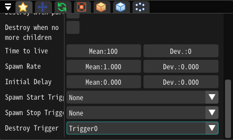

15.通过触发器改变特效！¶
概要¶
本章介绍Effekseer中的触发器功能。触发器允许你在播放过程中改变特效。
如下例所示，你可以触发一个充能的武器的发射特效。
双击发送触发器信号。
触发器功能¶
触发器是一种机制，允许向当前播放的特效发送多达四种触发信号。被触发的特效可以根据节点中设置的参数改变其行为。
触发器设置¶
触发器引起的行为变化在基础设置中设置。

基础设置面板中的触发器设置
在编辑器中发送触发信号¶
触发信号可以在控制面板发送。

用于发送触发信号的按钮
在游戏中发送触发信号¶
SDK和游戏引擎的插件中有发送触发信号的API。
示例特效¶
本章使用示例文件TriggerLaser.efkefc进行讲解。

本章制作的特效的节点设置
特效播放时，会执行以下行为。
Charge节点的粒子被生成，子节点粒子随之生成。Laser节点的粒子不被生成。
当触发信号0被发送给特效时，会执行以下行为。
Charge节点的粒子被删除，子节点的粒子随之停止生成Laser节点的粒子开始生成，子节点的粒子随之生成
触发时删除粒子的节点¶

Charge节点的触发器设置
触发时开始生成粒子的节点¶
Laser节点的触发器设置
提示¶
被触发器删除的粒子可能会瞬间消失，这可能是不自然的。在这种情况下，你可以设置删除后淡出，使它们通过淡出而自然消失。
淡出行为
设置了在生命周期内淡出时，粒子会在生命周期结束被删除时淡出，但不会随着被触发器删除而淡出。在以下两个例子中，粒子都是由触发器删除的，但淡出行为是不同的。

在生命周期内淡出 |

在销毁后淡出 |
总结¶
本章解释了如何使用触发器。利用触发器可以制作可交互的特效。